Amuletos
Hay un total de 45 Amuletos por encontrar en el juego, de los cuales el Caballero puede conseguir sólo 40 a la vez.
| Nombre | Descripción |
|---|---|
| Afortunado |
Adquiere tu primer amuleto. 5G |
| Encantado |
Adquiere la mitad de los amuletos de Hallownest. 10G |
| Bendecido |
Adquiere todos los amuletos y recibe la bendición de Salubra. 15G |
Fragmentos de máscara
| Nombre | Descripción |
|---|---|
| Protegido 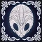 |
Adquiere 4 fragmentos de máscara. 5G |
| Enmascarado |
Adquiere todos los fragmentos de máscara. 15G |
Fragmentos de vasija
| Nombre | Descripción |
|---|---|
| Animoso |
Adquiere 3 fragmentos de vasija. 5G |
| Anima Mundi |
Adquiere todos los fragmentos de vasija. 15G |
Jefes
| Nombre | Descripción |
|---|---|
| Falsedad | Derrota al Falso Caballero. 5G |
| Fortaleza | Derrota al Campeón Fracasado. 10G |
| Examen de determinación | Derrota a Hornet en Sendero Verde. 5G |
| Prueba de determinación | Derrota a Hornet en Límite del Reino. 10G |
| Iluminación | Derrota al Maestro de Almas. 5G |
| Mortalidad | Derrota al Tirano de Almas. 10G |
| Liberar | Derrota al Receptáculo Roto. 5G |
| Paz | Derrota al Familiar Perdido. 10G |
| Honor | Derrota al Defensor del Estiércol. 5G |
| Respeto | Derrota a los Señores Mantis. 10G |
| Obsesión | Derrota al Coleccionista. 10G |
| Ejecución 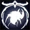 | Derrota al Señor Desleal. 5G |
| Rivalidad | Derrota a Zote en el Coliseo de los Insensatos. 10G |
Esencia
| Nombre | Descripción |
|---|---|
| Ajuste | Reúne 600 de Esencia. 5G |
| Despertar 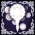 | Reúne 1800 de Esencia y despierta el Aguijón Onírico. 10G |
| Ascensión 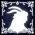 | Reúne 2400 de Esencia y escucha las últimas palabras de la Vidente. 15G |
Larvas
| Nombre | Descripción |
|---|---|
| Amigo de las Larvas | Rescata la mitad de las larvas cautivas. 5G |
| Metamorfosis 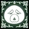 | Rescata a todas las larvas cautivas. 15G |
Estaciones de Ciervos
| Nombre | Descripción |
|---|---|
| Conexión | Abre la mitad de las estaciones de ciervos. 5G |
| Esperanza | Abre todas las estaciones y descubre el Nido de Ciervos. 10G |
Miscelánea
| Nombre | Descripción |
|---|---|
| Abandono 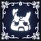 | Deja que Zote muera. 5G |
| Testigo | Pasa un último momento con Quirrel. 10G |
Pureza | Vence al Forjaguijones con el Aguijón Puro. 10G |
| Parejita feliz 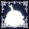 | Permite que el Forjaguijones encuentre una nueva vocación. 10G |
| Consuelo 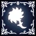 | Dale paz a la Doliente Gris. 5G |
Vacío | Recuerda el pasado y une al Abismo. 20G |
| Maestra 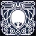 | Destruye a Monomon, la Maestra. 5G |
| Caballero 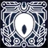 | Destruye a Lurien, el Vigilante. 5G |
| Bestia | Destruye a Herrah, la Bestia. 5G |
| Cartógrafo 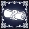 | Adquiere un mapa de cada zona. 15G |
Desafíos
| Nombre | Descripción |
|---|---|
| Finalización |
Consigue un porcentaje de finalización del 100% y termina el juego. 50G |
| Finalización rápida |
Consigue un porcentaje de finalización del 100% y termina el juego en menos de 20 horas. 50G |
| Cazador entusiasta 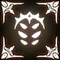 |
Registra todas las criaturas de Hallownest en el Diario del Cazador. 10G |
| Cazador auténtico 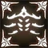 |
Recibe la Marca de Cazador. 15G |
| Alma de Acero 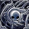 |
Termina el juego en el Modo Alma de Acero. 50G |
| Corazón de acero |
Consigue un porcentaje de finalización del 100 % y termina el juego en el Modo Alma de Acero. 50G |
| Speedrun 1 |
Completa el juego en menos de 10 horas. 20G |
| Speedrun 2 |
Completa el juego en menos de 5 horas. 50G |
| Guerrero |
Completa la Prueba del Guerrero. 5G |
| Conquistador 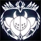 |
Completa la Prueba del Conquistador. 15G |
| Insensato 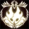 |
Completa la Prueba de los Insensatos. 20G |
Finales
| Nombre | Descripción |
|---|---|
| Hollow Knight 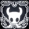 | Derrota al Hollow Knight y conviértete en el Receptáculo. 30G |
| Hermanos Sellados 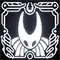 | Derrota al Hollow Knight con Hornet a tu lado. 30G |
| No más sueños 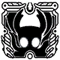 | Derrota a Destello y consume la luz. 50G |
| Cambio de era 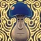 | Ayuda al Heraldo a pasar página. 15G |
Logros de Sueños Ocultos (2)
| Nombre | Descripción |
|---|---|
| Memoria 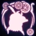 |
Derrota al Defensor Blanco. 10G |
Romance Oscuro |
Derrota al Príncipe Gris Zote. 10G |
Logros de La Compañía de Grimm (3)
| Nombre | Descripción |
|---|---|
| Gran Actuación |
Derrota al Líder de la Compañía: Grimm. 10G |
| Ritual 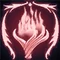 |
Derrota al Rey Pesadilla y completa el Ritual. 10G |
| Desvanecimiento 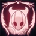 |
Desvanece a la Compañía de Grimm de Hallownest. 10G |
Logros de Buscador de Dioses (6)
| Nombre | Descripción |
|---|---|
| Hermandad 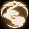 |
Completa el Panteón del Maestro. 10G |
| Inspiración |
Completa el Panteón del Artista. 10G |
| Concentración 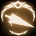 |
Completa el Panteón del Sabio. 10G |
| Alma y Sombra 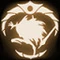 |
Completa el Panteón del Caballero. 10G |
| Acepta el Vacío 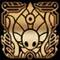 |
Asciende al Panteón de Hallownest y toma tu lugar en la cima. 50G |
| Conclusión Pura |
Alcanza el 112% de finalización y termina el juego. 50G |